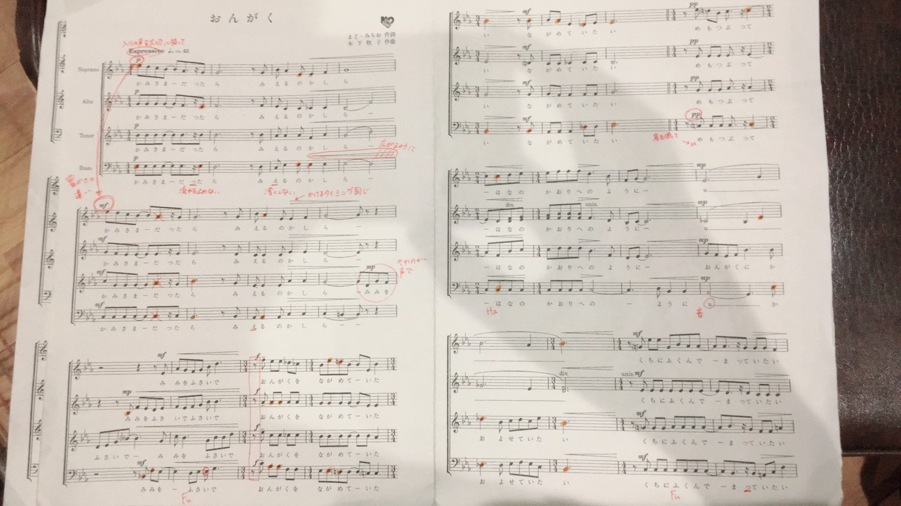
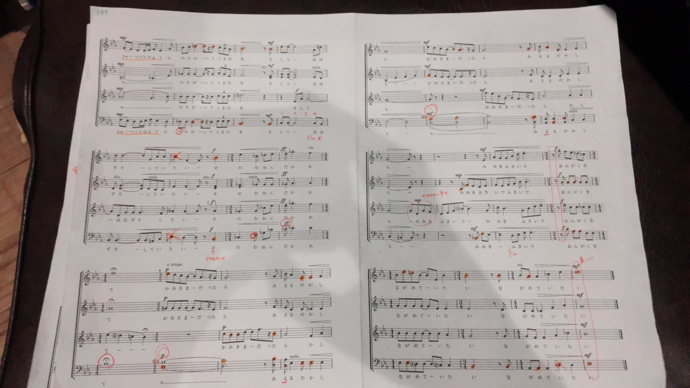

自分の息が足りないところを理解して、
小節の切れ目以外の場所でカンニングブレス入れられる所を探して
楽譜に丸つけておきな★
ソプラノ
綺麗✨強弱とか表現の方、引っ張って頂けるとありがたい…！
アルト
ごーらーんーー、いい感じ✨
やまにーと、やまのー、が、にぃぃ・のぉぉと聞こえがち。(☆)
テナー
rit.感謝です✨からよー、なくんだよーー、いいこだよーー
の動くところが押してる感じに。(☆)
↑音符3つある内の最初と最後は同じ音なのでそこ意識してみてください！
バス
発声いい感じ✨各自3段目などにあるド#の音を確認してきてほしい…！
あとはふるすへーーのぇが押し気味に。(☆)
☆この、音が動くところはスラーです！
難しいけど押す感じではなくもう少し繋がりを意識して優しく、
初めの音の延長〜というイメージで歌えると…！
おんがく今日のノルマ！
〇全体
・子音を大事にし過ぎてちょっとずつ遅れるかも...
・耳をふさいで～で走るので注意！
・“ながめていたい” の “んが”感をもっと大袈裟に！
・最初から3小節目 クレッシェンドしたあとぶつ切りにならない
・全体的にどこにクレッシェンドデクレッシェンドがかかってるのか見直す！
・U～の伸ばしを深く！！(大きさはいい感じ)
〇内声
・シャーベットの前 ぶつ切りにならない
〇ソプラノ
・見えるのかしらの“え”が浅い
・難しいと思うけど高い音の“おんがくをながめていたい”の“が”を深くできると◎
〇アルト
・音程見直し(特に伸ばしの音)
声質はそんなに悪くないんだけどねー...
〇テナー
・2人くらい音が飛び抜けて聞こえてくる...
全体的にもっと中和してほしい
・2枚目3小節目 地声注意
・みみをふさいでの“ふ”のHを大切に
でも基本上手ー！
〇バス
・もうちょっとしたに響かせて欲しい
(特に途中から入る“みみをふさいで～”と“かおりへのように～”とか)
でもマスケラはほんとに1番素晴らしい


バスの方、今日言ってたほかパートと同じところはオレンジマーカーになってます。